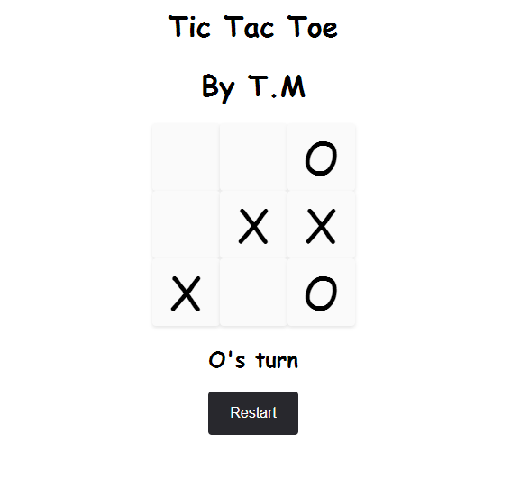

A calculator application developed in Java, JavaFX using IntelliJ and SceneBuilder.
This calculator application was developed using Java, JavaFX and the IntelliJ IDE, with SceneBuilder used to design the GUI. The application allows users to perform basic arithmetic operations such as addition, subtraction, multiplication, and division, as well as decimal calculations. The code for the application consists of two parts: the Java code, which sets up the GUI and handles user input, and the JavaFX code, which defines the GUI components and layout.